5g特点
2020-2021年左右的热门安全方向，3GPP提出的5G网络拥有下列3个特点（工作场景）： - 超大频宽（eMBB） - 超低延迟（URLLC） - 超大连接数（mMTC）
5G网络总体架构
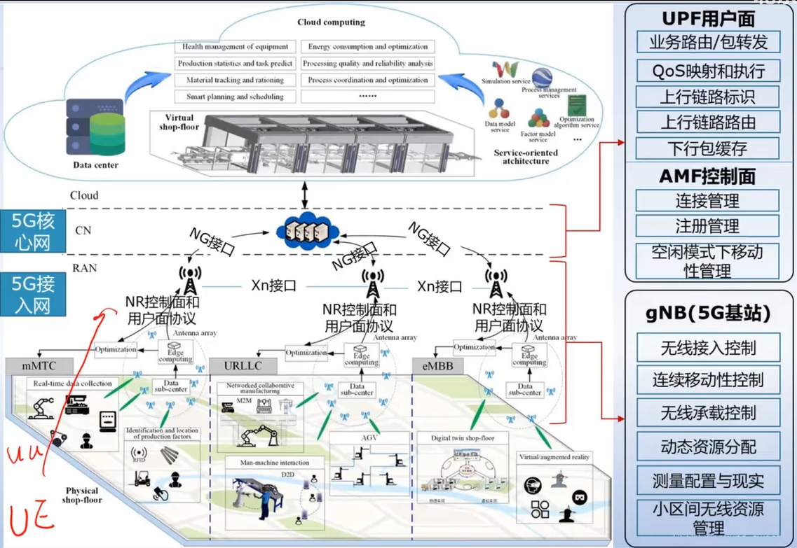
总体架构：TS 38.401 NG-RAN， NG-RAN总体架构，包括NG、Xn和F1接口以及它们与空中接口的交互。
补充说明： - UE：用户终端，比如：5g手机。 （UE通过5G接入网接入5g系统，UE部分通过UU口接入。3个工作场景：eMBB，URLLC，mMTC） - gNB（5G基站），eNB（4G基站） - 5G接入网通过 NG接口 接入5G核心网， NG接口起于gNB，止于UPF和AMF
其它模拟测试5G环境的架构方案样例：
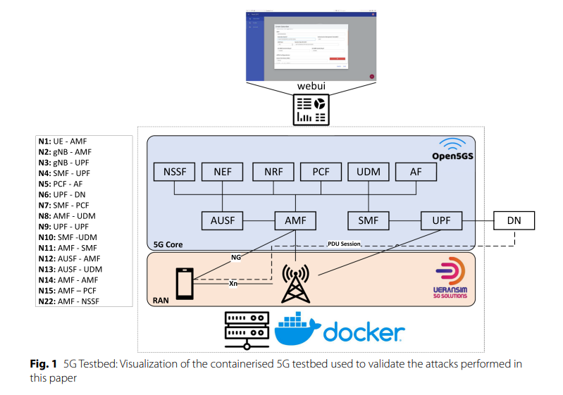
网元和接口
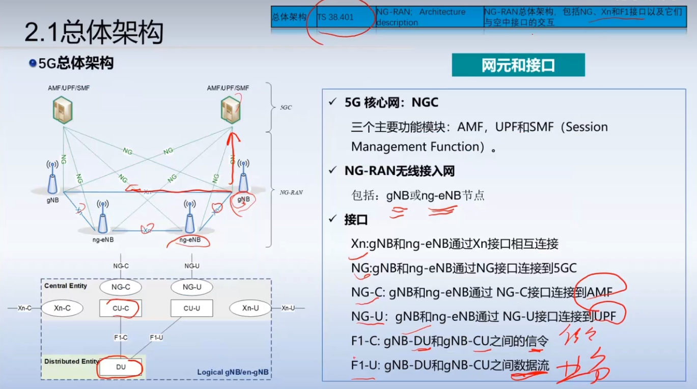
5G核心网：NGC
三个主要功能模块：AMF、UPF、SMF（Session Management Function）
NG-RAN无线接入网
包含：gNB（5G基站）或ng-eNB（4G LTE基站）节点
接口
- Xn: 基站和基站之间通过Xn接口相互连接
- NG： 基站和核心网之间通过NG接口相互连接
- NG-C：gNB和ng-eNB通过NG-C接口连接到AMF
- NG-U：gNB和ng-eNB通过NG-U接口连接到UPF
- F1-C: gNB-DU和gNB-CU之间的信令 （DU数据单元 CU控制单元）
- F1-U: gNB-DU和gNB-CU之间的数据流
功能划分
gNB（5G基站）或ng-eNB（4G LTE基站）
- 小区间无线资源管理（RRM，Inter Cell Radio Resource Management）
- 无线承载控制（RB，Radio Bear Control）
- 连接移动性控制（Connection Mobility Control）
- 测量配置与规定（Measurement Configuration and Provision）
- 动态资源分配（Dynamic Resource Allocation）
AMF, Mobility Management Function
- NAS安全，Non-Access Stratum Security
- 空闲模式下移动性管理，Idle State Mobility Handling
UPF, User Plane Function
- 移动性描点管理，Mobility Anchoring
- PDU处理（与Internet连接），PDU Handling
SMF, Session Management Function
- UE IP地址分配和管理
- UP 功能的选择和控制
- 控制策略执行和QoS的一部分
- 下行链路数据通知
NG接口
NG接口能力如下图所示：
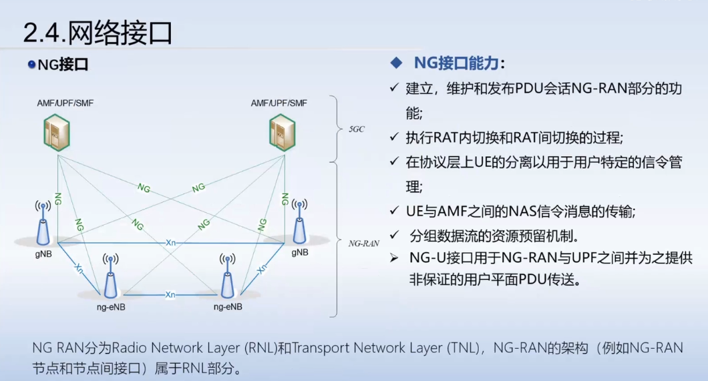
NG RAN分为RNL（Radio Network Layer，无线网络层）和TNL（Transport Network Layer，传输网络层）; NG-RAN的架构（如NG-RAN节点和节点间的接口）属于RNL部分。
5G通信架构
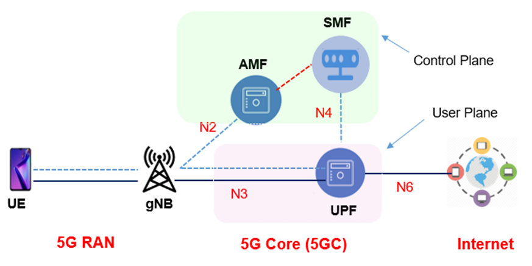
关于图上的网元介绍（实际情况可能更复杂）
1）SMF（Session Management Function）
功能：SMF负责用户会话管理，处理数据面的用户数据传输。
作用：管理会话的建立、修改、释放，以及UE的用户面数据流的路由。
2）UPF（User Plane Function）
功能：UPF处理用户数据面的数据包传输。
作用：负责数据包的转发、分片、重组等操作，实现用户数据的高效传输。
UE的初始接入
在线视频
5G用户终端UE通过gNB接入5G网络的信令流程， 如下图所示：
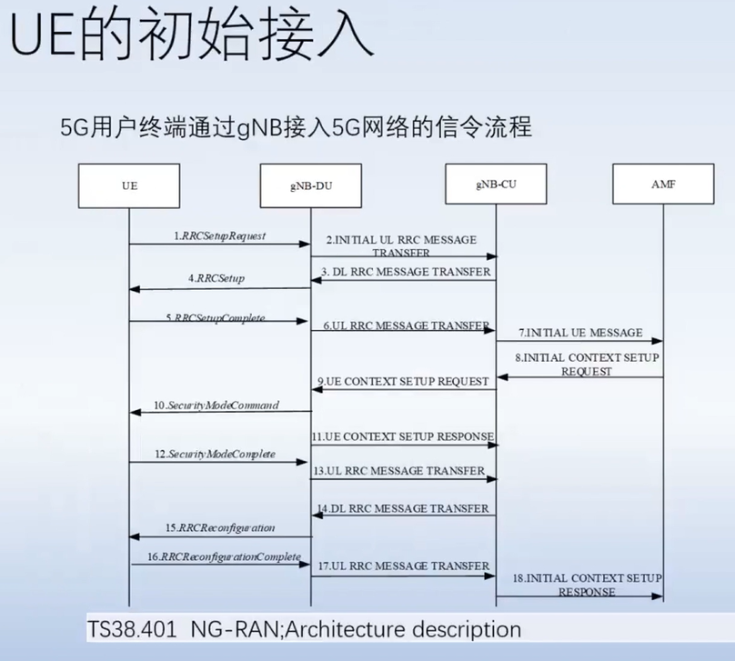
总共18步。
5g_sec_issue.png
from ai:
5G用户终端（UE, User Equipment）通过gNB (Next Generation NodeB，即5G基站) 接入5G网络的信令流程主要包括以下步骤from ai：
1.搜索小区: UE开机后开始搜索可用的5G小区。
2.小区选择和重选: UE根据信号的强度、质量等决定加入最适合的小区。
3.随机接入过程 (RACH, Random Access Channel): UE向gNB发送随机接入请求信号，这通常包括一个随机选择的RA-RNTI (Random Access-Radio Network Temporary Identifier)。
4.随机接入响应: gNB接收到随机接入请求后，会返回一个随机接入响应，这个响应包含时间校准信息和一个临时的C-RNTI (Cell-Radio Network Temporary Identifier)。
5.初始建立连接: UE使用响应中的校准信息，通过PDCCH (Physical Downlink Control Channel) 和PUSCH (Physical Uplink Shared Channel) 发送RRC (Radio Resource Control) 建立请求。
6.RRC建立完成: gNB回复RRC建立完成消息，这标志着UE和gNB之间的连接已经建立。
7.登录过程: UE发送NAS (Non-Access Stratum) 层的请求，进行核心网的认证和安全模式设置。
8.安全控制: 核心网将安全命令发送至UE通过gNB，UE回复确认消息。
9.注册接受: 一旦安全过程完成，UE将被网络允许进入5G网络，核心网发送注册接受消息，UE被分配一个GUTI (Globally Unique Temporary Identifier)，用于后续交互中标识UE。
10.会话建立: UE发送会话建立请求，请求建立数据连接，网络配置用户的QoS参数和安排资源。
11.上下文设置: 一旦会话建立请求被核心网接受，UE与网络的上下文被建立完毕，UE可以开始数据发送和接收。
这个信令流程高度简化了通信过程，它保证了UE可以安全、有效地接入5G网络。实际的流程可能因网络配置、制造商和软件实现方式的不同而有所差异。此外，随着网络状态的变化，UE可能还需要进行额外的流程，如断线重连、移动性管理等。
5G接入网面临的安全风险
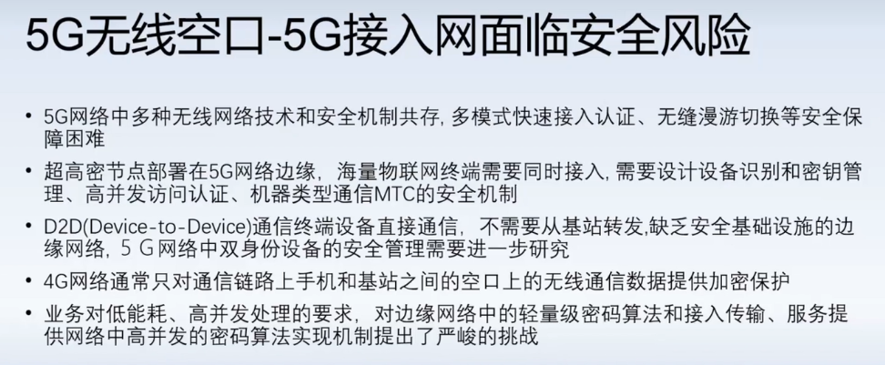
5G接入网安全架构
TS 33.501
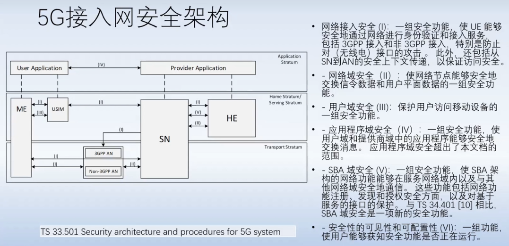
启动认证程序和选择认证方法
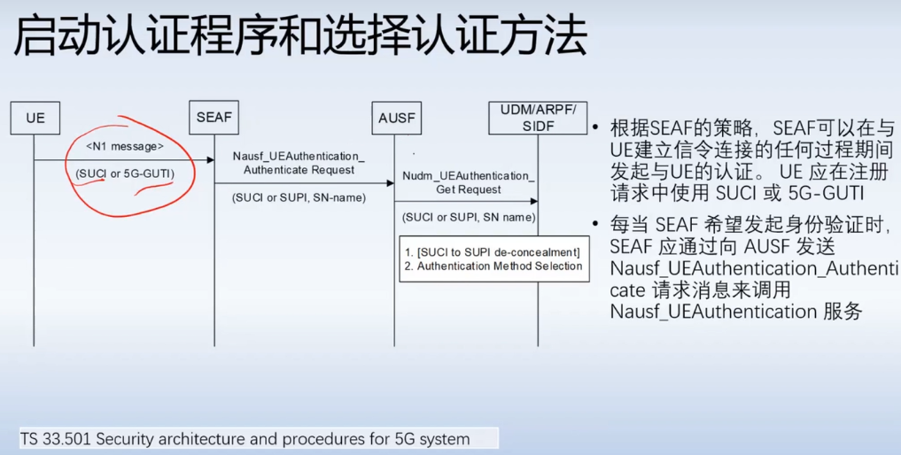
5G无线协议栈
-
User Plane
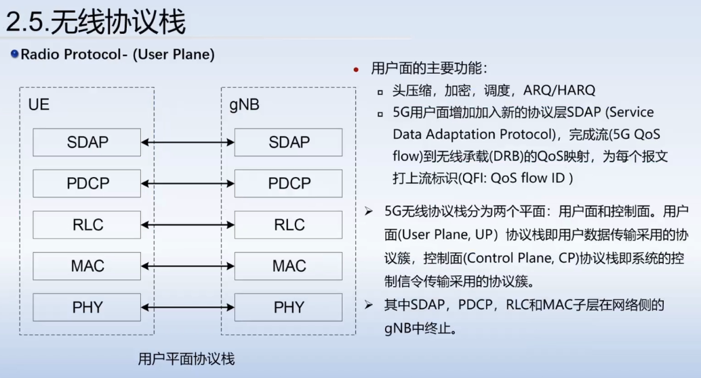
-
Control Plane
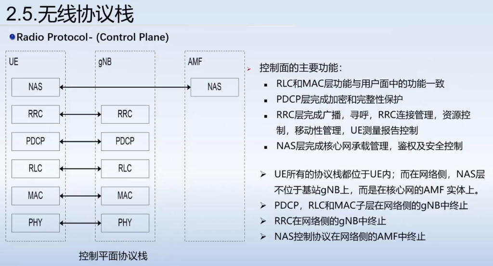
-
5G端到端控制面协议栈
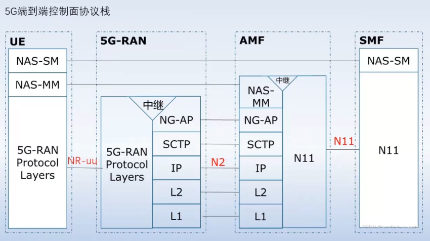
-
5G端到端用户面协议栈
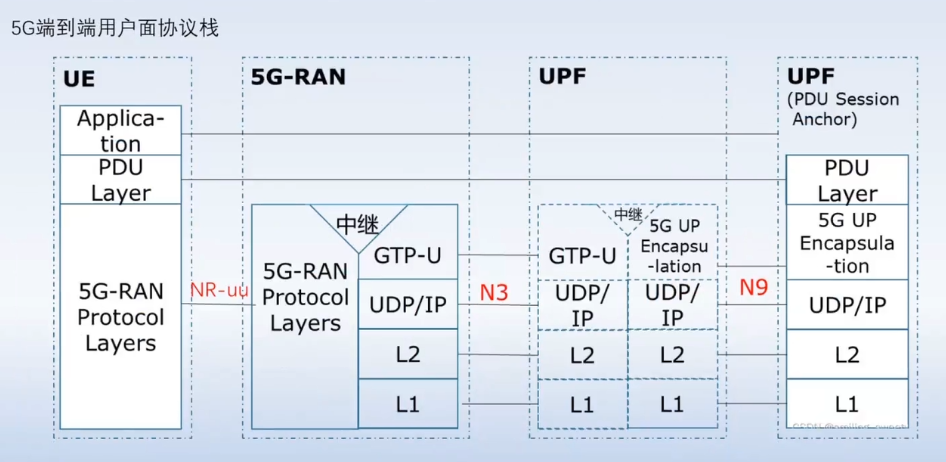
5G核心网网络功能
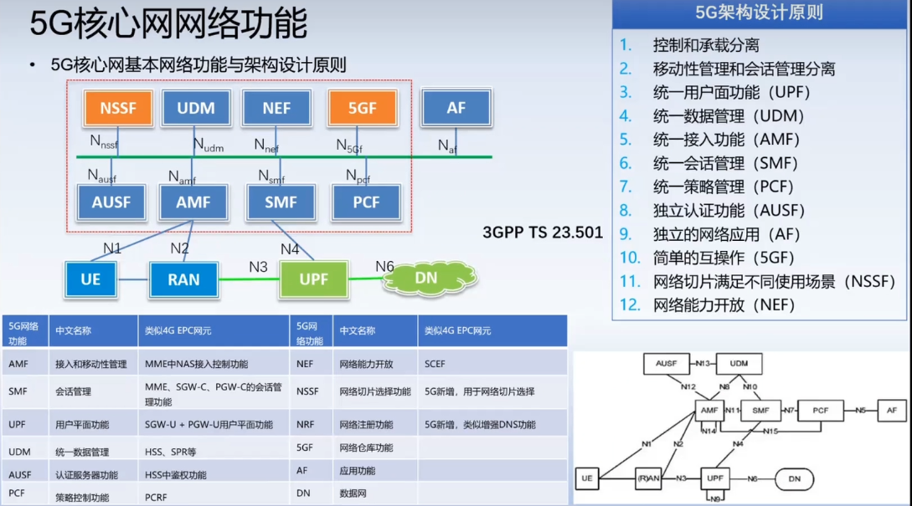
更详细内容见视频
CVE info
- CVE-2021-41794 Open5GS Stack Buffer Overflow During PFCP Session Establishment on UPF -- Open5GS的漏洞
- CVE-2023-47345 to CVE-2023-47347 通过Fuzzing技术挖掘Free5GC中PFCP协议的安全漏洞 -- Free5GC的，直接涉及漏洞挖掘这个主题的。CVE-2023-47345 to CVE-2023-47347 POC估计是这个：***.com
BrainStorm
5G的技术堆栈可能为用户和运营商网络的攻击打开了大门。 此类攻击可以从国际漫游网络、运营商网络或提供服务访问的合作伙伴网络执行。
- 用于建立订阅者连接的 PFCP 存在潜在缺陷，包括拒绝服务、切断订阅者对互联网的访问以及将流量重定向到攻击者。 正确的架构配置可以阻止这些类型的攻击。
- HTTP/2 协议负责在 5G 网络上注册和存储配置文件的重要网络功能 (NF)，该协议包含多个漏洞，可能使黑客能够获取 NF 配置文件并使用身份验证状态、当前状态等详细信息来冒充任何网络服务。 位置以及网络访问的订户设置。 攻击者还可以删除 NF 配置文件，这可能会导致经济损失并损害用户信任。
Term
PFCP
PFCP是在3GPP的5G核心网络标准中定义的，用于控制用户平面功能（UPF）上的数据流转发。详见PFCP笔记
协议的漏洞挖掘，多集中于对该协议的利用。
BFD
Bidirectional Forwarding Detection，是一个网络协议，用于快速速检测线路和转发路径的故障。比如：快速检测、监控网络中链路或IP路由转发连通状况。 BFD可在各种网络环境中使用，从物理链路到虚拟链路均可。
gNB
在5G网络术语中，gNB是下一代基站（Next Generation NodeB）的简称，是5G网络中的基站，负责无线信号的传输和处理。
ng-eNB
在5G网络术语中，ng-eNB是指适应5G网络架构的4G LTE基站，它通过5G核心网（5GC）的新接口NG连接。
Free5GC
Free5GC是一个开源的5G核心网络实现项目，旨在提供一个完整的5G核心网络解决方案，包括多个关键组件，以支持5G通信网络的部署、测试和研究。
e.g. 聚焦于Free5GC中的SMF和UPF节点，运用Fuzzing技术对PFCP协议进行深入测试，以发现潜在的未知漏洞和安全问题。
UAV
Unmanned Aerial Vehicle，即无人机。UAV通信指的是无人机与控制站之间或无人机与其他系统之间的通信。
other term
AMF：负责UE（UserEquipment，用户终端）的注册、连接、访问验证授权、移动性和可达性管理，在UE和SMF（SessionManagementfunction，会话管理功能）之间提供SM（SessionManagement，会话管理）消息的传输，UE和SMSF（ShortMessageServiceFunction，短消息服务功能）之间提供SMS（ShortMessageService，短信息服务）消息的传输，提供UE和LMF（LocationManagementFunction，定位管理功能）之间以及RAN（RadioAccessNetwork，无线局域网）和LMF之间的位置服务消息的传输等。
AUSF（AuthenticationServerFunction，认证服务器功能）：负责对3GPP和非3GPP的UE的接入进行认证。
SMF：负责与分离的数据面交互，根据自身配置或与PCF（PolicyControlFunction，策略控制功能）交互来制定策略和流模板，为会话选择和控制UPF和SSC（SessionandServiceContinuity，会话和服务连续性）模式，管理会话的建立、更新和释放以及维护着PDU（ProtocolDataUnit，协议数据单元）会话状态、群组管理、控制和协调UPF的收费数据收集和流量控制等。负责UE的IP分配管理，具备DHCP、ARP代理或IPv6邻居请求代理功能。
UPF：响应SMF请求，作为移动基础设施RAN和DN之间的互连点，PDU会话锚点负责完成用户平面上GTP-U协议的封装和解封装、分组路由和转发、数据包检查、QoS流映射等网络用户面的处理。完成用户平面部分策略规则实施，例如门控、重定向和流量转向。为计费以及合法拦截提供用户流量收集接口以及流量使用报告。
PCF：负责用户的策略管理和实施，包括会话的策略、移动性策略等。
UDM（UnifiedDataManagement，统一数据管理）：存储和管理用户数据和配置文件。
UDR（UnifiedDataRepository，统一数据存储库）：支持UDM订阅数据、PCF策略数据和应用程序数据等的存储和检索。
UDSF（UnstructuredDataStorageFunction，非结构化数据存储功能）：NF可在UDSF中存储和检索其未在3GPP规范中定义其结构的非结构化数据。
NSSF（NetworkSliceSelectionFunction，网络切片选择功能）：选择服务于UE的网络切片实例的集合。
NRF（NetworkRepositoryFunction，网络功能注册功能）：负责网络功能实例及配置文件的注册、更新、注销，使各NF可以相互发现选择并通过API进行通信。
NEF：作为外部用户接入的API网关，负责将5G网络的能力开放给外部网元，同时网络内的NF可通过NEF向其他NF公开功能和事件，NEF完成网络能力的收集、分析和重组。
N3IWF（Non-3GPPInterWorkingFunction，非3GPP互通功能）：负责将不可信的非3GPP接入网（如Wi-Fi）接入到5G核心网。UE与N3IWF建立一个IPsec隧道，N3IWF分别通过N2接口和N3接口接入5G核心网的控制面和用户面。
UCMF（UEradioCapabilityManagementFunction，UE无线能力管理功能）：存储UE无线功能ID。AMF可以订阅UCMF获得分配的UE无线电功能ID的新值，并在本地缓存它们。
CHF（ChargingFunction，计费功能）：负责用户计费、配额授信等，也支持融合的在线和离线计费。
LMF：负责向5GC注册或访问的UE的定位所需资源的整体调度和协调，还可以计算或验证最终位置、速度和精度。5G可基于无线、终端以及用户面等多种手段提供定位能力，但定位方法因访问类型而异，定位精度也很大一部分取决于接入网所作的增强。
SMSF：用于提供NAS（non-access-stratum，非接入层）短信服务。
5G-EIR（5G-EquipmentIdentityRegister，5G设备身份注册）：检查PEI（PermanentEquipmentIdentifier，永久设备标识符）的状态，例如检查其是否未列入黑名单。
NWDAF（NetworkDataAnalyticsFunction，网络数据分析功能）：NWDAF用人工智能技术从网络功能、OAM（OperationAdministrationandMaintenance，运维管理系统）和应用层获取的数据，进行分析，以生成需要的数据结果。NF、OAM或AF可以利用NWDAF的分析结果进行不同的优化操作。
SCP（ServiceCommunicationProxy，服务通信代理）：在间接通信模式下，业务功能和网络路由功能分离，NF服务使用者通过用SCP使用请求的NF。从而各NF可专心于业务功能的实现，路由控制等功能统一由SCP来实现。
SEPP（SecurityEdgeProtectionProxy，安全边缘保护代理）：用于5G用户国际漫游，与他网运营商的5G互通，负责PLMN间控制平面接口上的消息过滤和策略管理。
NWDAF用人工智能技术从网络功能、OAM（OperationAdministrationandMaintenance，运维管理系统）和应用层获取的数据，进行分析，以生成需要的数据结果。NF、OAM或AF可以利用NWDAF的分析结果进行不同的优化操作。
SCP（ServiceCommunicationProxy，服务通信代理）：在间接通信模式下，业务功能和网络路由功能分离，NF服务使用者通过用SCP使用请求的NF。从而各NF可专心于业务功能的实现，路由控制等功能统一由SCP来实现。
SEPP（SecurityEdgeProtectionProxy，安全边缘保护代理）：用于5G用户国际漫游，与他网运营商的5G互通，负责PLMN间控制平面接口上的消息过滤和策略管理。
5GC核心网初始注册流程详解
5G终端在核心网一侧的2个基本流程。5G设备开机后和5G核心网之间注册交互的信令过程。
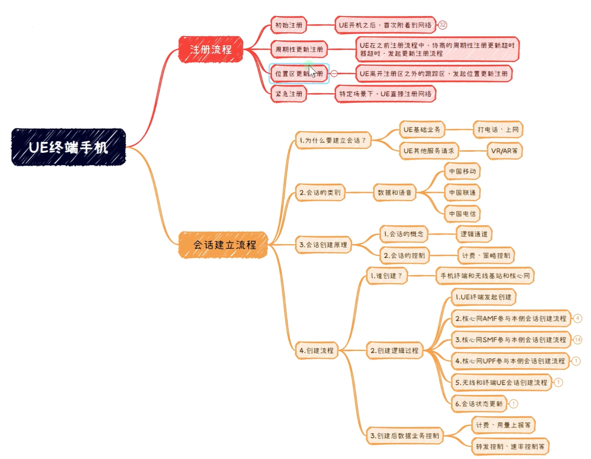
5G网络咨安学习笔记
- 一個人的5G網路與資安小圈圈系列
3GPP提出的5G网络拥有下列3个特点（工作场景）： - 超大频宽（eMBB） - 超低延迟（URLLC） - 超大连接数（mMTC）
5G网路架构如下：
各元件的功能:
首先要先讲到UE以及RAN。
UE为User Equipment 也就是使用者装置 最简单的称呼为(手机)，当然可能不只有手机可使用SIM卡透过基地台连接至无线网路这些设备都统称为UE。
RAN(Radio Access Network)无线电连接网路，这边可以明显的发现，无线网路中只有一个装置会发送无线电波，也就是基地台，因此RAN就是代指基地台。（也就是基站）
介绍完除了5G网路以外的元件，接下来介绍5G网路中的各元件。
5G网路分成 控制平面(Control Plane) 与 使用者平面(User Plane)，这边统一进行介绍:
NRF(Network Repository Function): 负责让各5G网路功能进行注册，5G网路功能间互相通讯都须透过NRF找寻目标的位址
AMF(Access and Mobility Management Function): 负责让使用者可连接进5G网路，并协助使用者认证身分
Ausf(Authentication Server Function): 负责使用者的认证，检查像是SIM卡的资料是否有在这个核心网路中
Nssf(Network Slice Selection Function): 负责验证使用者是否可使用当前网路切片，网路切片为何之后再解释
SMF(Session Management Function): 负责协助使用者建立与使用者平面的Session
UDM(Unified Data Management): 负责管理5G网路中的数据，一般来说为使用者认证资讯
PCF(Policy Control Function): 负责让如网路服务营运商可动态调整5G网路的政策的功能
UDR(Unified Data Repository): 负责储存5G网路中的资料，简单来说就是资料库
NEF(Network Exposure Function): 可将5G网路功能开放出来给使用者进行连线，可让使用者透过AF对5G网路内部的部分功能进行调整或查看
UPF(user plane function): 负责将使用者的资料转发至DN(一般情况上来讲为外网，但可进行设定)
基本上来讲5G核心网路就分为这10项功能，后续介绍5G网路中各元件的传输流程与通讯协定。
todo day2
关于boofuzz的实现
- Fuzzing TKIP & CCMP
- fuzzowski
REF
- Exploit the Fuzz – Exploiting Vulnerabilities in 5G Core Networks
- The Challenges of Fuzzing 5G Protocols
- 对5G协议的漏洞挖掘研究 -- 上面那篇的中文版
- 5GC核心网初始注册流程详解
- 5GC之PFCP会话解读学习 -- 讲PFCP
- 5GC核心网会话PCFP创建流程学习 -- 必学
- 5G通信系统与安全第六讲：5G网络接入与安全
- Free5GC源码解析
- Threatening the 5G core via PFCP DoS attacks: the case of blocking UAV communications
- 5G Security & Smart Environments
- 5GC_PFCP_Intrusion_Detection_Dataset
环境搭建参考：
- 【Free5GC】环境安装搭建
- 【Free5GC】***.com脚本测试流程
- Free5GC官方视频
- Free5gc + ueransim模拟5G网络